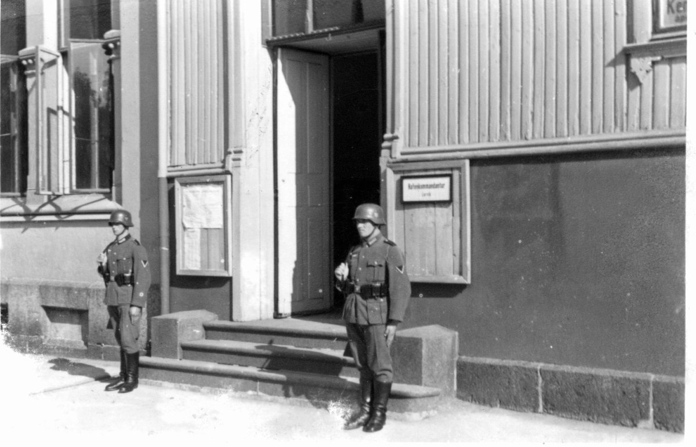
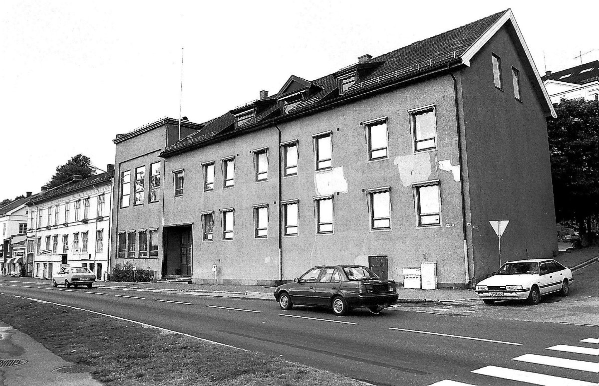

Festiviteten · Larvik
Fra kjøpmannsgård og byens rådhus til kulturhus og festsal — en bygning som har stått i sentrum av Larviks liv siden 1792.
Historien
Festiviteten i Larvik har stått gjennom okkupasjon, forfall og rivningstrusler. Den har vært hjem for kjøpmenn, rådhus i over hundre år, og scene for noen av Norges største navn. Dette er historien om byens storstue — fra grunnmuren ble lagt i 1792 til dørene åpnet på nytt i 2021.
Mange bygninger langs Storgata går med i en storbrann. Byggingen av patrisierhuset starter. Eier er kjøpmann Rasmus Linaae.
Kjøpmann Even Bull overtar bygget og gjør det ferdig. Det er flere virksomheter på eiendommen, bl.a. et brennevinsbrenneri med utgangspunkt i en kilde på stedet.
Patrisierhuset blir ferdig bygd som bolig for daværende eier.
Tollkasserer Ambrosius Hofgaard kjøper bygningen.
Postmester Johan L. Scladermund overtar. Han har bolig og kontor i bygningen til han dør i 1872. Samme år tar Larvik sjømannsforening initiativ til aksjeinnbydelse for å kjøpe eiendommen og utvide med et bygg på nabotomten.
Trebygningen bygges om og murbygningen påbegynnes. Arkitekt er Paul Due.
Festiviteten innvies 8. mai som konsert- og teaterlokale for det som nå heter Laurvigs Klub. Det er restauration i både 1. og 2. etasje.
Bjørnstjerne Bjørnson taler på folkemøte 19. mai. Tema er folkesuvereniteten og ønsket om unionsoppløsning. Møtet ender i regelrett slåsskamp og Bjørnson må geleides ut bakveien. Bjørnson gjester Festiviteten også to ganger til.
Larvik kommune kjøper Festiviteten for 40.000 kr. Bygningen blir byens rådhus og fungerer som det fram til kommunesammenslåingen 1. januar 1988.
Pusses opp utvendig. Trebygget dekkes med murpuss. Dette resulterer i fuktskader og ødelegger fasaden.
Fridtjof Nansen feires i Festiviteten etter den første Fram-ferden. Colin Archer er vert.
Roald Amundsen holder foredrag etter Gjøa-ferden gjennom Nordvestpassasjen.
Et innbyggerkollegium bestående av mange av Larviks førende menn og kvinner tar initiativ til å bygge et nytt festlokale, men det blir aldri realisert.
Larvik bystyre i Festsalen ca 1914.
Larvik sangforening i Festsalen ca. 1928.
Nordahl Grieg har opplesingsaften med sin diktsamling «Norge i våre hjerter».
Okkupasjonsmakten inntar Festiviteten. Det blir tilholdssted for bl.a. havnekommandanten.
Festiviteten males og pusses opp etter krigsårene. Erling Nordheim, far til komponisten Arne Nordheim, tiltrer som vaktmester 1. februar. Den første konserten holdes 12. februar med den svenske gramofonstjernen Karin Juel på scenen.
Hele bygningen rabitzpusses og får mineralittoverflate. De gamle vinduene erstattes med enkle vippevinduer.
Kommunen flytter fra Festiviteten til nytt rådhus i gamle Romberggata skole.
Festiviteten foreslås revet og erstattet av et hageanlegg.
Forfallet har eskalert og bygget er på det meste fraflyttet.
Foreslås revet for å gi plass til nytt kulturhus. Underskriftskampanje med 3000 navn redder bygget.
Det bevilges 10 millioner til utvendig oppussing, deretter 3 millioner i 2005.
Nye kalkulasjoner foreligger. Total oppussing beregnes til 30 millioner.
Full stopp på innvendige arbeider. Rådmannen foreslår å selge bygget.
Utvendig fasade er ferdig oppusset.
Nye undersøkelser viser at det trengs 29 millioner for å gjøre bygningen ferdig. Vedtas ikke, og Rådmannen vil igjen selge.
Det vedtas mål om å gjøre Festiviteten til byens rådhus igjen. Prisanslag på 37,5 millioner.
Nye undersøkelser viser at bygget er i svært dårlig forfatning og at det trengs 61 millioner. Full stans fra kommunen.
Politikerne vil selge for 6,5 millioner. Selges for 1 krone.
Festiviteten er ferdig restaurert og ombygget. Ellings kafé og Festsalen åpner 21. september.
Festiviteten · Larvik
Over 200 år med minner er skapt her. La ditt arrangement bli det neste kapittelet — enten det er bryllup, konferanse eller selskapsfest.
Send en forespørsel